Les transportsNotre épopée dans l'ouest de l'Australie terminée, nous avons dû remettre les vélos dans le bus d'abord (de Albany a Perth), puis dans l'avion pour arriver a Melbourne.
Cette fois, nous avons voulu éviter de risquer de rater notre avion et sommes arrivés a 22h a l'aéroport, notre vol partant a 9h le lendemain matin. Et heureusement ! Nous savions que Quantas fournissait des boîtes pour vélo, mais quand la dame nous les a apportées, nous avons réalisé que ce n'était pas gagné : les boîtes faisaient la taille d'un petit vélo droit avec les roues démontées ! Autrement dit, elles étaient beaucoup trop petites pour nos vélos couchés. Et la dame nous a dit qu'il fallait que ça rentre ! Nous avons essayé de lui dire qu'il serait plus facile de laisser nos vélos intacts pour les déplacer, mais elle nous a répondu avec aplomb que ça risquait d'endommager l'avion ! Nous n'avions pas vu le risque sous cet angle, mais bon. Equipés en papier bulles, sacs plastiques et autres scotchs, nous ne nous sommes pas démoralisés. Francis a démonté les vélos progressivement, jusqu'à ce qu'ils rentrent dans la petite boîte (dérailleur, roues, portes-bagages, guidon, pédales, tout y est passé, jusqu'à ce qu'il ne reste que la carcasse). Pendant ce temps, j'attachais les sacoches, les étiquetais et embalais.
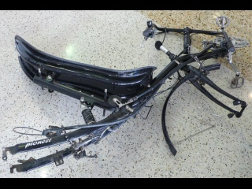A 3 heures, nous étions fin prêts.
Nous nous sommes couchés sur nos matelas et dans nos sacs de couchage à côté des tapis roulants de récupération des baggages, sous l'oeil envieux d'un couple de hippies sexagénaires qui voyagaient avec pas beaucoup plus d'effets personnels qu'une guitare et dormaient à même la moquette de l'aéroport.
Vers 6h, l'aeroport s'est reveillé, et nous avec. Nous étions les premiers à l'enregistrement !
A l'arrivée à Melbourne, l'aterrissage fut difficile : il a fallu 3 heures à Francis pour remonter les 2 vélos, fatigué après une courte nuit.
MelbourneNous sommes restés seulement une journée a Melbourne. Le centre rectangulaire est divisé en beaux "blocks" carrés. Les tours abritent une population très cosmopolite. Les tramways sillonnent la ville, Chinatown regorge de petits restaurants apétissants, quelques "vieux" bâtiments nous rappellent qu'il s'agit d'une ancienne colonie anglaise. Nous pique-niquons sur les rives de la Yarra river et préparons la suite de notre voyage.
Nous avons décidé de prendre le train jusqu'à Bairnsdale, 200 km plus au nord, pour nous laisser le temps de faire un détour par les montagnes.
Kozsiuzko National Park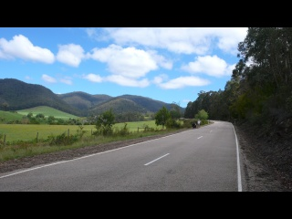 De Bairnsdale a Bruthen, nous avons pédalé sur une piste cyclable, la East Gippsland Rail Trail, accueillis par la pluie. Puis nous avons obliqué sur Buchan pour nous diriger vers les plus hautes montagnes d'Australie. Qui ne sont pas si hautes que ça ! Mais nous avons eu de bonnes côtes quand même, dont une de 12 km et plus de 700m de montée en continu. La piste n'était pas trop mauvaise à ce moment heureusement. Par endroits, cette route (la "Barry Way") est chaotique, mais elle est très belle : au milieu de la forêt, suivant à un moment la célèbre Snowy River, et croisant nombre d'autres rivières dans lesquelles nous nous sommes baignés. Décrassés et revigorés, nous repartions pédaler sous le soleil de plomb (après plus de 3 semaines fort pluvieuses, il était enfin au rendez vous).
Contrairement à ce que l'on nous avait dit à Buchan, il était possible de trouver un peu de ravitaillement (et d'essence) avant de rejoindre Jindabyne, en particulier à Gelantipy où la dame du camp de voyage scolaire vend quelques produits pas trop chers, ou à Seldom Seen, où les victuailles et l'eau sont chères, mais le patron David vaut le détour. Au milieu de ses poules et de son bazar, il n'avait pas encore désaoulé de sa soirée, et nous racontait tout plein d'histoires en titubant. Nous avons réussi à grand peine à nous échapper quand il nous a proposé de nous emmener dans sa vieille carlingue voir de soi-disant belles chutes d'eau.
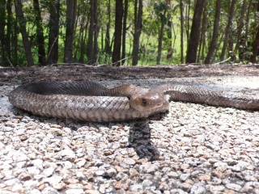 Nous avons également croisé sur notre route un charmant serpent marron très photogénique. Était-ce un brown snake ou un tiger snake ? Les 2 sont très venimeux.
Notons aussi que Francis a crevé 2 fois en 3 jours : un morceau de verre dans le pneu avant, puis un clou dans le pneu arrière. Pas de chance. Moi je croise les doigts, toujours aucune depuis Paris.
Les nuits dans le bush sous les étoiles et autour du feu, moi qui cuisine les spaghetti pendant que Francis joue de la guitare... Vive les montagnes !
Jindabyne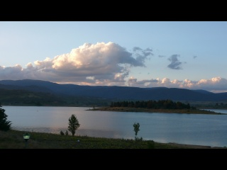 La descente sur Jindabyne (environ 40km) fut délicieuse. Une fois arrivés, le camping au bord du lac, la douche chaude, le dernier James Bond au cinéma, le barbecue pour dîner, tout semblait parfait !
Mais notre premier steak de kangourou fut fatal a Francis. Du coup, nous avons passé le 24 décembre à la diète : riz, coca et babane en dessert pour le réveillon.
Le lac de Jindabyne a été créé lors de la construction du barrage dans les années 30. L'ancienne ville a été inondée et l'eau a été détournée de la célèbre Snowy River pour irriguer la région de Canberra. Le lac sert aux sports nautiques en été. L'hiver, Jindabyne est une ville active car elle se trouve en contrebas des 2 seules stations de ski australiennes : Thredbo et Perisher Blue. Mais ici comme en France, la neige se fait de plus en plus rare au fil des années. Et comme leurs stations vont de 1700 a 2000m, le dénivelé n'est pas terrible non plus. Du coup, les Australiens préfèrent les stations européennes pendant leur été et neo-zélandaises en hiver.
De Jindabyne a Tathra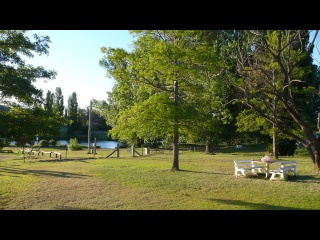 Francis a fini par terrasser le méchant kangourou, et le 25 fut notre vraie journée de Noel : baignade dans le lac le matin, puis un peu de vélo jusqu'à Dalgety, guitare et lecture au bord de la Snowy River, coucher de soleil flamboyant sur les montagnes, et dîner au coin du feu.
Nous aprenons alors que le débit de la Snowy River actuel est de 4% des précipitations : 96% est encore prélevé au niveau du barrage pour irrigation. Avant, ils laissaient passer environ 1% de l'eau mais bizzarement, l'écosystème s'est modifié, tous les poissons sont morts et tout et tout. Comme les habitants des villes en contrebas du barrage ralaient sans cesse, ils ont demandé à des scientifiques ce qu'il convenait de faire, et ceux-ci ont conclu qu'il fallait laisser couler plus d'eau (tiens donc). Ils ont donné comme objectif 28%, les politiques ont accepté un chiffre de 26% à terme et 21% à l'horizon 2012. Ils avaient dit qu'ils laisseraient 6% s'écouler rapidement, mais aujourd'hui, le débit n'est que de 4%.
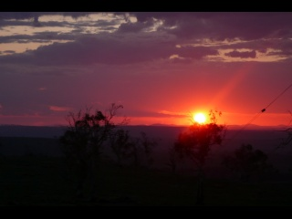 Après Dalgety, une petite journée dans les grandes pleines arides où seul l'élevage extensif est possible, un record de vitesse (68km/h), et nous de rejoindre Nimmitabel.
Puis la grande descente vers la côte, trop sinueuse et fréquentée pour être agréable, mais le temps est pluvieux donc on en profite pour avancer : 83 km jusqu'à Bega. Là nous trouvons un Backpacker à prix plus qu'abordable : 30 $ la nuit pour 2. Le lendemain, il fait très chaud et Ron (le vieux patron du Backpacker) nous conseille d'aller nous baigner dans la Bega River, à 100m en contrebas.. Comme on est en été, l'eau ne nous arrivera peut-être pas plus haut qu'à la taille, mais elle est très pure, vient directement des montagnes, et c'est celle qu'on boit au robinet, nous dit-il. Nous nous rendons sous le pont, mais n'y trouvons pas d'eau , que des traces de 4x4 dans le lit de la rivière. Pourtant le pont a une taille respectable. Nous demandons à plusieurs personnes qui nous confirment que la rivière est à sec, et nous disent qu'elle est probablement retenue par le barrage qui se trouve en amont. Décidément, il semble que ça ne dérange pas trop les australiens d'assécher les rivières. Et Ron qui croit qu'il boit l'eau de la rivière !
Bega est la capitale du fromage australienne : des tonnes sont produites chaque jour. Mais par 35*C dehors, nous n'avions pas très envie de fromage et avons décidé de rejoindre la côte.
La côte : de Tathra à Sydney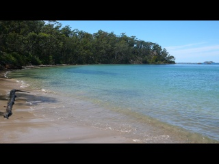Cette partie de notre voyage fut mitigée. La côte est magnifique, c'est certain, et nous avons vu de très belles plages et baies aux mille nuances du turquoise au bleu marine : la plage de Middle Beach, où une famille d'aborigènes vient en vacances 2 mois par ans et règne un peu sur le camping (il est de bon ton de les saluer. Ils sont gentils, mais Francis a été très déçu de voir les enfants boire du coca et le "chef" allumer le feu de bois avec de l'essence), la baie de Narooma et celle de Batemans Bay, très belles et idéales pour se baigner, car les plages non protégées de la côte sont plus agitées : des vagues assez grosses déferlent en continu, pour le plus grand plaisir des surfers.
Mais bien que cette côte soit très belle, elle n'est accessible quasiment que par la Princes Highway, qui est très fréquentée, ce qui rend le vélo désagréable. Après avoir pédalé dans l'Ouest de l'australie et dans les montagnes, le trafic nous paraissait insupportable. Nous allons donc à l'encontre du Lonely Planet qui conseille cet itinéraire, et conseillons de réaliser celui-ci en voiture. De plus, cette région est beaucoup plus dense et le camping sauvage est difficile : mieux vaut dormir dans des auberges ou des campings.
Cependant, nous avons rencontée sur cet itinéraire des gens adorables.
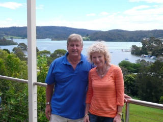 Tout d'abord John et Virginia à Narooma. Nous avions parle avec John quelques minutes devant le supermarché à propos des vélos. Puis étions partis en quête d'un camping. Mais tout était plein ou trop cher donc nous allions repartir en quête d'un "sneaky" camping quand une voiture s'arrête à côté de nous et John en descend. Il nous avait pisté a travers la ville pour nous inviter a dormir chez lui. C'est la première fois que quelqu'un nous invite spontanément s dormir. Nous trouvons cela tellement gentil que nous sommes d'abord méfiants. Nous apprenons que John, promoteur immobilier, a eu un grave accident de voiture, et qu'il a mis longtemps à pouvoir remarcher. Mais maintenant, comme la marche lui fait mal, il fait beaucoup de vélo.
Nous parlons avec eux de nos voyages, de politique, de la situation aborigène... Et dormons dans un lit tellement confortable qu'il nous est dur de repartir le lendemain. Surtout que Virginia insiste pour que nous restions : "on aurait pu aller manger du poisson frais au restaurant au bord de la mer". Mais le devoir nous appelle.
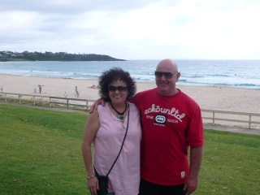 A Ulladula, nous avons rencontré Franky et Allen. Pendant que Francis faisait les courses, ils sont venus me poser des questions sur les vélos, puis m'ont proposé de nous héberger chez eux. C'était un couple très rigolo. La cinquantaine, ils n'avaient pas pu vraiment voyager pendant longtemps, avec leurs 3 enfants, d'autant plus qu'ils avaient d'abord créé un restaurant-pizzeria, puis avaient été fermiers. Maintenant, Frankie travaille de nuit pour garder des handicapés mentaux et Allen vaporise des désherbants. Plus libres de leur emploi du temps, ils ont décidé de voyager en Europe. Sac au dos, et en faisant du stop ! Ils ont même dormis sous la Tour Eiffel avec un groupe d'autostoppers. Maintenant, ils sont inscrits sur un site de couch-surfing, pour rencontrer des gens, parler...
Il faut noter qu'Allen fabrique ses bières lui même, et que Franky fait son pain. Des gens adorables.
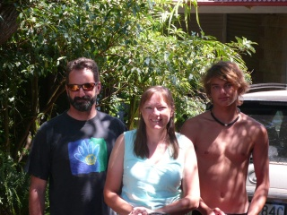 Et enfin la famille Adams, que nous avions croisé dans les montagnes et qui nous avait proposé de venir les voir à Kiama. Une fois de plus, le destin fait bien les choses : quand nous arrivons, Jenny nous dit qu'on est les bienvenus mais qu'elle fait une course de 100km le lendemain et que donc elle devra nous abandonner un peu. On lui demande s'il n'est pas trop tard pour participer à la course, et elle nous dit que non : banco !
La course part du sud de Sydney pour aller jusqu'à Jamberoo.
Nous parlons voyages, vélo et randonnée jusque tard. Et le lendemain matin : debout 4h30 car nous devons prendre le train de Kiama à Sydney et le départ de la course est à 7h30.
Dans le train, les autres cyclistes semblent en pleine forme, tandis que nous roupillons autant que possible. Jenny raconte comment elle s'est remise au vélo, alors qu'elle n'avait plus fait de sport depuis longtemps. D'abord avec un vélo à assistance électrique, puis progressivement avec un vélo de course. Des petites montées au début, puis plus longues, puis une course de 100km et enfin l'année dernière une de 200km. Pour la course que nous faisons ensemble, elle accompagne une amie qu'elle a motivée à faire ses premiers 100km.
Comme quoi rien n'est impossible !
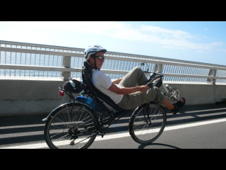 Enfin notre course s'est bien passée : c'était beacoup plus agréable comme ça que si on avait continué par nos propres moyens jusqu'à Sydney. Des voitures nous encadraient sur la highway, des bonhommes jaunes nous indiquaient le chemin... Et le trajet était plutôt agréable : à travers le parc national, sur le beau nouveau pont qui surplombe la mer et suit la falaise, puis le long de jolies plages et enfin arrivée dans les collines. Heureusement quand même que nous avions pris plein de provisions pour la route, car avec nos 17kg de vélo, ce n'était pas facile dans les côtes. C'est là que les vélos droits de course de 7kg nous dépassaient. Apparemment il y avait quand même plus de 900m de dénivelé positif et de 300 cyclistes.
Après la course, nous avons mangé un hamburger pendant que les autres buvaient un verre, puis nous sommes repartis avec Jenny vers les chutes de Minnamurra et la rainforest.
Retour chez Jenny a Kiama après 125 km parcourus, notre plus grosse journée. Nous passons une soirée fort agréable avec toute la famille.
Merci mille fois.
Sydney
Et le lendemain, départ pour Sydney en train. Nous nous sommes installés dans un Backpacker et avons repris nos pieds pour découvrir la ville. Pour l'instant, nous sommes enchantés : ville animée et multiculturelle, plages pour tous les goûts, beaux musées gratuits, parcs, restos variés pas chers (mention spéciale pour le marché aux poissons, où une douzaine d'huître ouvertes, un demi homard et une grosse portion de poulpe grillé coûte 40 dollars).
Nous avons déjà envie de venir y vivre...
5100 km parcourus, l'Australie, c'était génial. Vivement la Nouvelle Zelande !